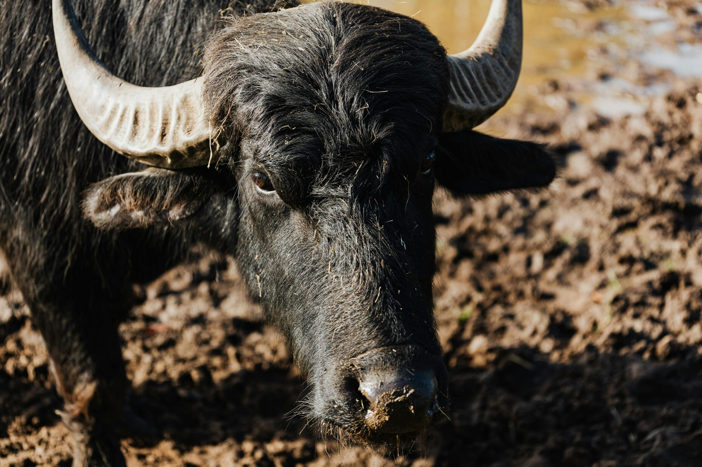
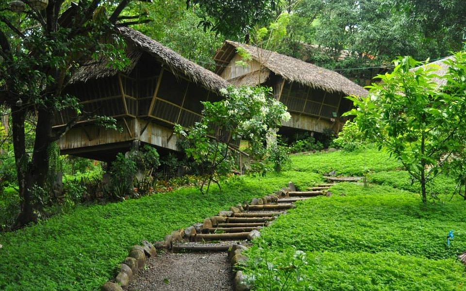
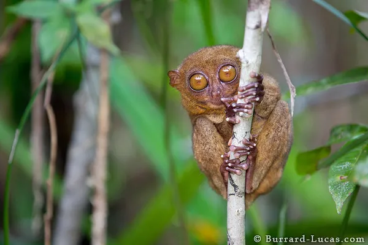

White beach boracay island
It is renowned for its breathtaking beauty, vibrant nightlife, and a wide range of water activities, making it a popular destination.

Carabao
The carabao is a large bovine used for agricultural work in the Philippines.

Mount Purro Nature-reserve
Mount Purro Nature Reserve is a protected area located in the Philippines, known for its rich biodiversity and conservation efforts. It serves as a sanctuary for various native species, including the Philippine eagle, and offers opportunities for eco-tourism and environmental education.

Philippine tarsier
The Philippine tarsier is a small primate found in the Philippines.